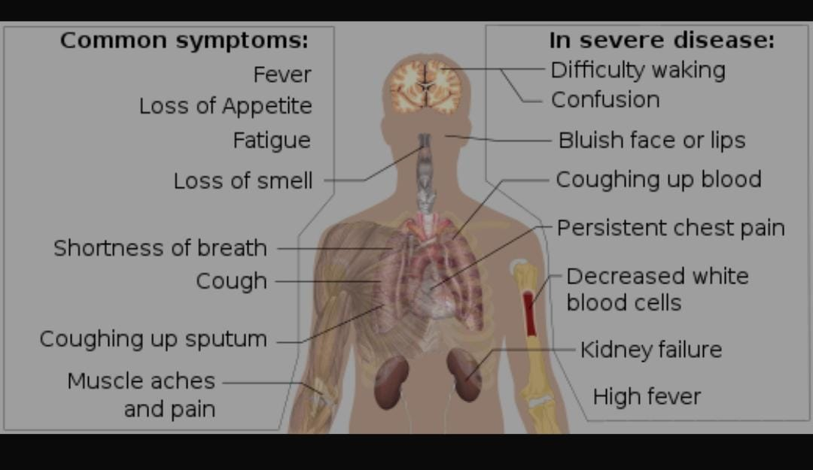

Coronaviruses are a large family of viruses that are known to cause illness ranging from the common cold to more severe diseases such as Middle East Respiratory Syndrome (MERS) and Severe Acute Respiratory Syndrome (SARS).
A novel coronavirus (COVID-19) was identified in 2019 in Wuhan, China. This is a new coronavirus that has not been previously identified in humans.
This course provides a general introduction to COVID-19 and emerging respiratory viruses and is intended for public health professionals, incident managers and personnel working for the United Nations, international organizations and NGOs.
COVID-19 is caused by a virus called SARS-CoV-2. It is part of the coronavirus family, which include common viruses that cause a variety of diseases from head or chest colds to more severe (but more rare) diseases like severe acute respiratory syndrome (SARS) and Middle East respiratory syndrome (MERS).
Like many other respiratory viruses, coronaviruses spread quickly through droplets that you project out of your mouth or nose when you breathe, cough, sneeze, or speak.
The word corona means crown and refers to the appearance that coronaviruses get from the spike proteins sticking out of them. These spike proteins are important to the biology of this virus. The spike protein is the part of the virus that attaches to a human cell to infect it, allowing it to replicate inside of the cell and spread to other cells. Some antibodies can protect you from SARS-CoV-2 by targeting these spike proteins. Because of the importance of this specific part of the virus, scientists who sequence the virus for research constantly monitor mutations causing changes to the spike protein through a process called genomic surveillance.
As genetic changes to the virus happen over time, the SARS-CoV-2 virus begins to form genetic lineages. Just as a family has a family tree, the SARS-CoV-2 virus can be similarly mapped out. Sometimes branches of that tree have different attributes that change how fast the virus spreads, or the severity of illness it causes, or the effectiveness of treatments against it. Scientists call the viruses with these changes “variants”. They are still SARS-CoV-2, but may act differently.
Is Corona Boon or Bane?
Symptoms of COVID-19
To Understand the symptoms more easiy refer to the image given below:

Symptoms of COVID-19 are variable, ranging from mild symptoms to severe illness. Common symptoms include headache, loss of smell (anosmia) and taste (ageusia), nasal congestion and runny nose, cough, muscle pain, sore throat, fever, diarrhea, and breathing difficulties. People with the same infection may have different symptoms, and their symptoms may change over time. Three common clusters of symptoms have been identified: one respiratory symptom cluster with cough, sputum, shortness of breath, and fever; a musculoskeletal symptom cluster with muscle and joint pain, headache, and fatigue; a cluster of digestive symptoms with abdominal pain, vomiting, and diarrhea.In people without prior ear, nose, and throat disorders, loss of taste combined with loss of smell is associated with COVID-19 and is reported in as many as 88% of cases.
Of people who show symptoms, 81% develop only mild to moderate symptoms (up to mild pneumonia), while 14% develop severe symptoms (dyspnea, hypoxia, or more than 50% lung involvement on imaging) and 5% of patients suffer critical symptoms (respiratory failure, shock, or multiorgan dysfunction). At least a third of the people who are infected with the virus do not develop noticeable symptoms at any point in time.These asymptomatic carriers tend not to get tested and can spread the disease.Other infected people will develop symptoms later, called "pre-symptomatic", or have very mild symptoms and can also spread the virus.
Follows As:
Fever and Cough
Tiredness and loss of state or smell
Sore Throat and Headache
Aches and Pain
A rash on skin or discolouration of fingers or toes or irritated eyes
Difficulty breathing or shortness of breathloss of speech or mobility, or confusion
chest pain